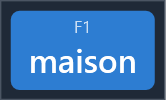
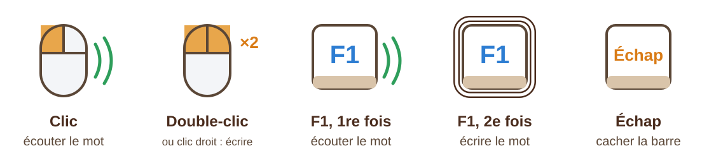
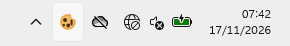
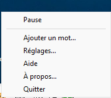
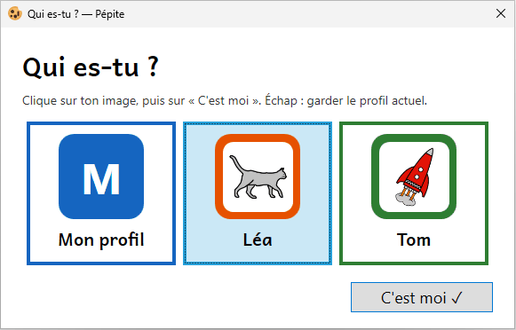

Bonjour, je suis Pépite !
Quand tu écris, je te propose des mots. Tu choisis : j'écris le mot pour toi. Je peux aussi le dire à voix haute.
Je marche presque partout où tu écris : le Bloc-notes, Word, une page Internet…
Écris. Dès la première lettre, une barre de mots arrive près de ton texte.

Choisis le mot. Un clic : tu l'entends. Un double-clic ou un clic droit : je l'écris. Avec sa touche (F1, F2…), c'est en deux fois : la première, tu l'entends ; la deuxième, je l'écris. Échap cache la barre.

Retrouve-moi près de l'horloge : je suis le petit biscuit. Tu ne le vois pas ? Clique sur la petite flèche ^ à côté de l'horloge.

Mon menu
Clique sur le biscuit. Un menu s'ouvre :

- Pause : je m'arrête. Le biscuit devient gris. Reprendre me remet en marche.
- Ajouter un mot… : un mot que je ne connais pas, comme ton prénom. Voir Mes mots.
- Réglages… : la taille, les lettres, la voix. Voir Les réglages.
- Aide : cette aide.
- À propos… : qui a fait Pépite, d'où viennent les images et les voix.
- Quitter : je m'arrête complètement.
Qui es-tu ?
À l'école, plusieurs élèves utilisent parfois le même ordinateur. Alors je demande Qui es-tu ?
Clique sur ton image, puis sur C'est moi ✓. Je garde tes réglages et tes mots rien que pour toi.

Tu t'es trompé d'image ? Échap ferme la fenêtre sans rien changer. Ensuite, demande à ton enseignant.